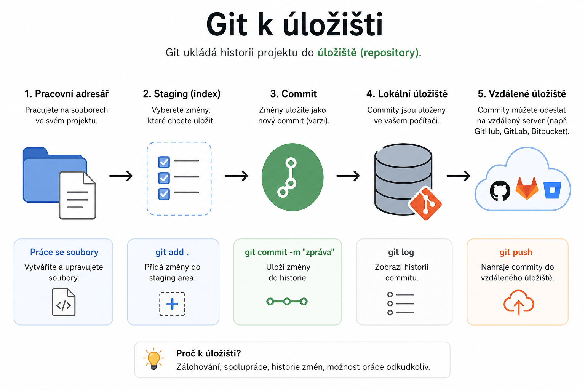

Git – Práce s úložištěm
Praktické rady pro vytvoření a použití Git úložiště na lokálním i online prostředí.

Vytvoření úložiště
Kompletní postup
Inicializace bare úložiště Spusťte v terminálu:
git init --bare <cesta><cesta>= cílová složka, musí končit.gitNapř.:C:\projekty\moje-repozitar.git
Warning
Cesta musí mít na konci .git, jinak nebude úložiště správně rozpoznáno.
Klonování úložiště
Použití v pracovním prostředí
Klonování úložiště Spusťte v terminálu:
git clone <cesta><cesta>= adresa k úložišti (lokální nebo online), musí končit.gitNapř.:C:\projekty\moje-repozitar.gitnebohttps://github.com/uzivatel/projekt.git
Tip
Cestu lze použít jak lokální, tak online (např. GitHub, GitLab).